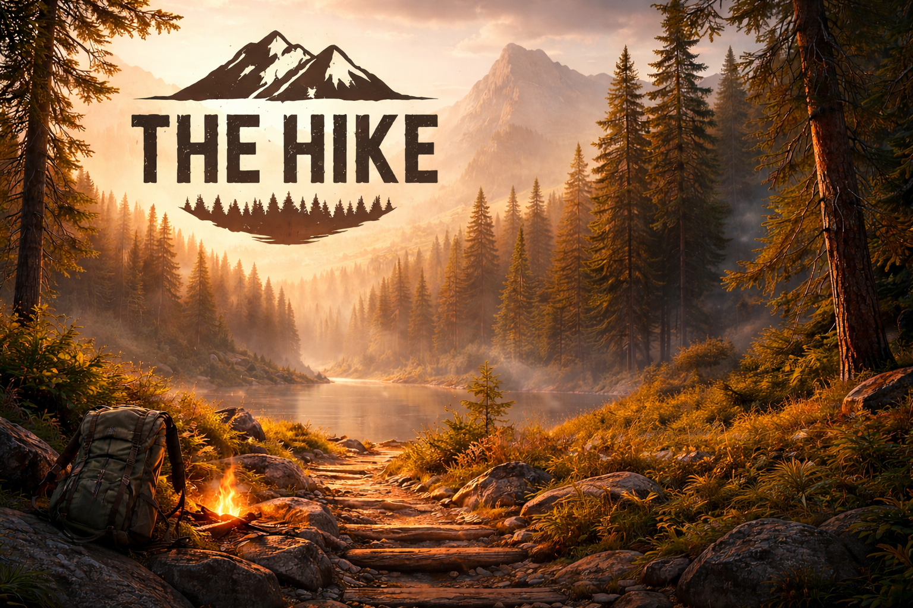
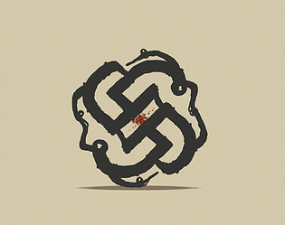
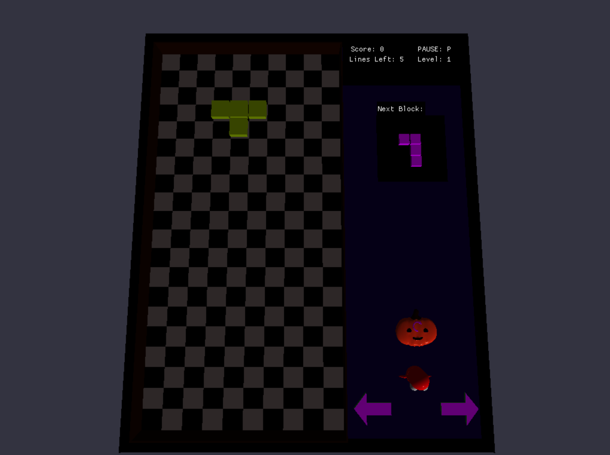

Experienced in Unreal Engine 5, Unity, C++, C#, UI frameworks, DataAssets, and scalable gameplay architecture.

A survival‑exploration project where I served as both producer and developer. I contributed to gameplay systems, project direction, and overall development.

A fully networked multiplayer session framework built in Unreal Engine 5 using C++. Includes Steam/EOS integration, invites, presence, and robust session handling.

A multi‑slot save system using USaveGame, supporting player stats, inventory, world state, and foliage persistence for survival gameplay.
I served in the military as a UAV operator for six years before leaving as an NCO. After my service, I worked as a renewable energy technician for two years, gaining hands‑on technical experience and problem‑solving skills.
I later graduated with a Bachelor's degree in Game Development from Full Sail University, where I focused on gameplay systems, engine architecture, and technical design. I have professional experience working with Unity/C# and Unreal Engine 5 using C++, with a strong interest in building scalable, maintainable systems that enhance player experience.
Email: KevinVelasquez94@gmail.com